Субтитры: отсутствуют | |
Субтитры: Русские и Английские | 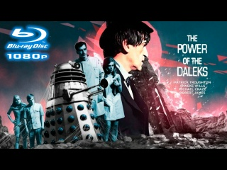 |
Субтитры: Русские и Английские | 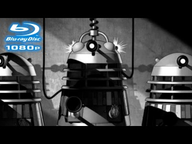 |
Субтитры: Русские и Английские | |
с новым звуком и улучшенными эффектами Субтитры: Русские и Английские | 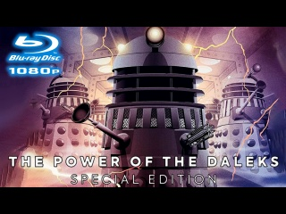 |
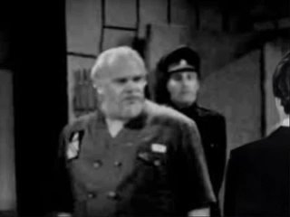 эп.1 - Marcus Dilloni | 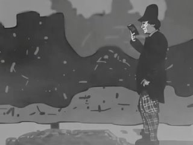 эп.1 - Отрывок- Исследование Вулкана (Harry Robins) |
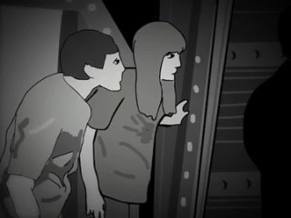 эп.1 - Отрывок- Клиффхэнгер (Harry Robins) | 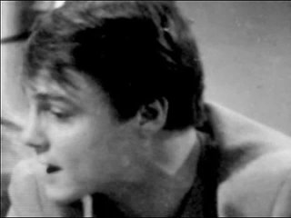 эп.2 - Marcus Dilloni |
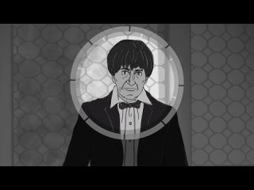 эп.2 - Отрывок- Клиффхэнгер (spikeandjezebel) | эп.3 - Отрывок- Первые 18 минут (Marcus Dilloni) |
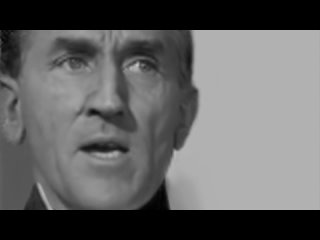
| Все эпизоды утеряны * Имеется реконструкция * Имеется официальная ч/б и цветная анимация * Имеется ч/б анимация с обновленными спецэффектами |
|---|
| |
«Сила далеков» — дебют Второго Доктора: на колонии Вулкан учёный пробуждает металлические капсулы, не подозревая, что внутри — далеки, а новый Доктор, ещё не до конца принятый спутниками, пытается раскрыть заговор и остановить надвигающуюся угрозу, пока амбиции и недоверие людей играют на руку врагу; тон истории — настороженный и напряжённый, где опасность прячется не только в стальных корпусах, но и в человеческой слепоте к очевидной угрозе.
LC recon - июль 1999 | 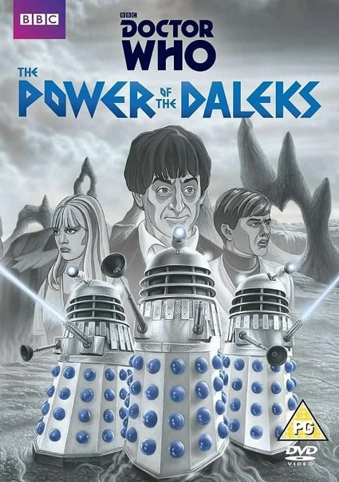 DVD - 21 ноября 2016 | 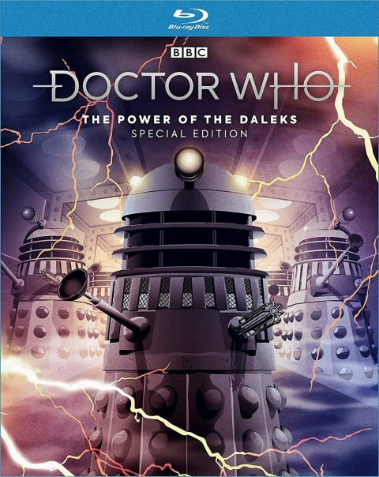 Blu-ray (Анимация) - 27 июля 2020 * Версия в нашей группе |
|---|
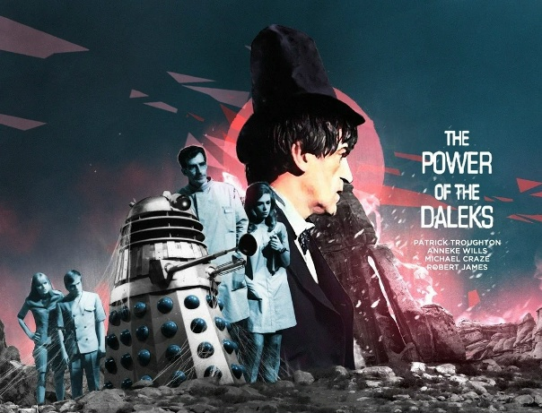
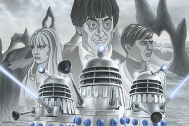